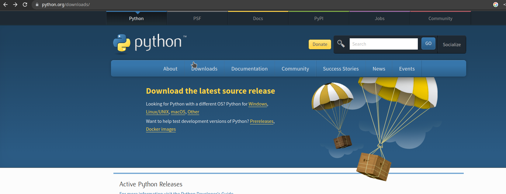
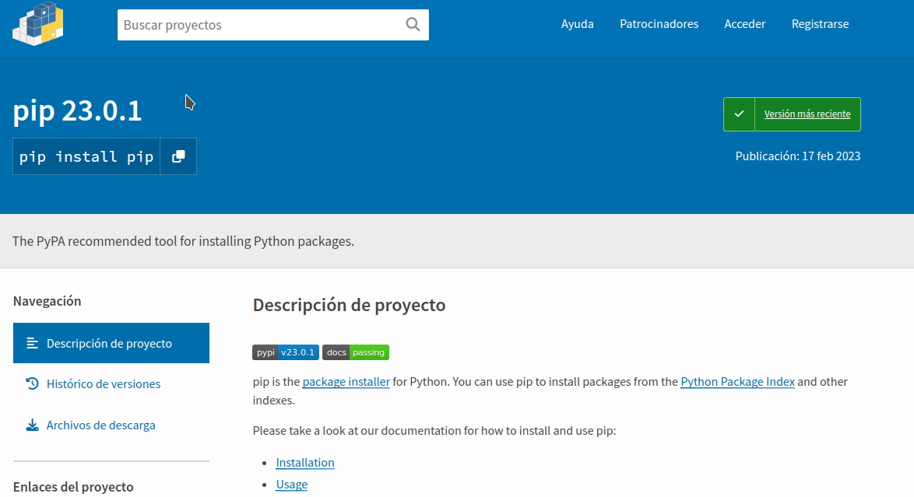

Módulo 5: Programación para la meteorología y el clima
Conceptos básicos de Python
Miguel Ángel Robles Roldán¿Qué es Python?
Python es un lenguaje de programación de alto nivel, interpretado y orientado a objetos que hace énfasis en la legibilidad de su código.
¿porqué usarlo?
- Es gratis"
- Es de código abierto
- Tiene un amplio rango de aplicaciones
- Es sencillo de usar
- Es multiplataforma
- Hay una gran comunidad activa
Descarga e instalación
Si aun no lo tienen, instalenlo!
Administradores de paquetes (bibliotecas)
- Anaconda: Maneja paquetes de Python y R
- Pip: Maneja paquetes de Python 
Modo intérprete vs script
Python tiene 2 modos de operación:
- Intérprete: Permite el envío de instrucciones de manera individual, la respuesta es "inmediata". Es útil para probar sintáxis o fragmentos de código
- Script: Ejecuta un programa almacenado en un archivo. Forma de uso más común y más recomendada
Tipos de datos
- Básicos: enteros, flotantes, cadenas, bytes, booleanos
- compuestos: listas, tuplas, diccionarios
Utilizar el modo intérprete para mostrar los diferentes tipos de datos
if
Sintaxis:
if [condicion]:
instrucción 1
instrucción 2
instrucción 3
...
elif [condicion]:
instrucción 1
instrucción 2
instrucción 3
...
else:
instrucción 1
instrucción 2
instrucción 3
...
while
Sintaxis:
while [condicion]:
instrucción 1
instrucción 2
instrucción 3
...
Funciones
Sintaxis:
def [nombre-funcion]:
instrucción 1
instrucción 2
instrucción 3
...
Bibliotecas
Sintaxis:
- import [nombre-biblioteca]
- from [nombre] import [funcion]
- import [nombre-biblioteca] as [aliasi]
Actividad
>>> Método de la multiplicación rusa: Primero se dibuja una tabla de dos columnas. Suponiendo que se quiere multiplicar dos números a y b, el número a se coloca en la parte izquierda y el b en la derecha. Se divide a entre dos y b se multiplica por 2, el resultado se coloca debajo del valor anterior. Esto se repite hasta que a vale 1. Si al dividir a se obtiene un número flotante, sólo se toma la parte entera para la siguiente operación. Se toman las filas en las que a es impar y se suma el número b correspondiente. La suma total es el resultado de la multiplicacion.
R = 6 + 24 = 30